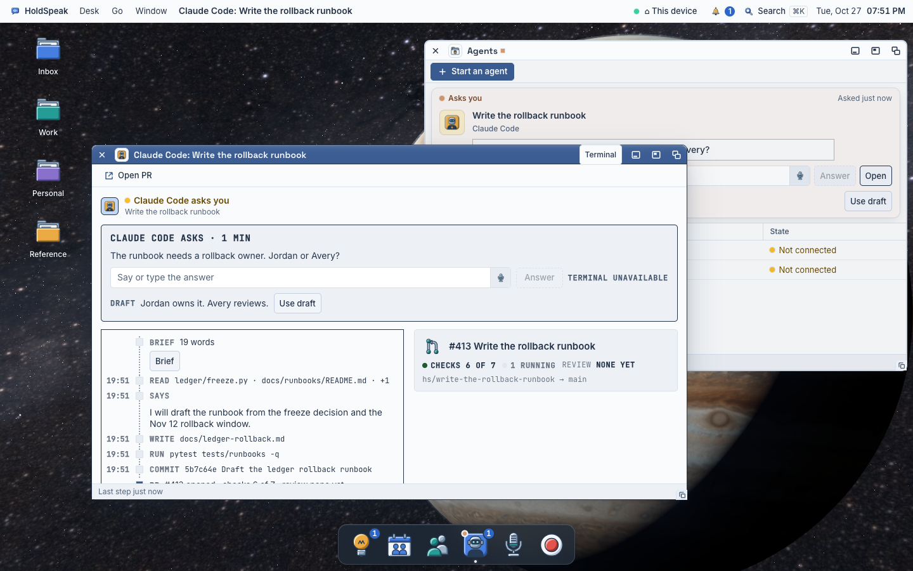
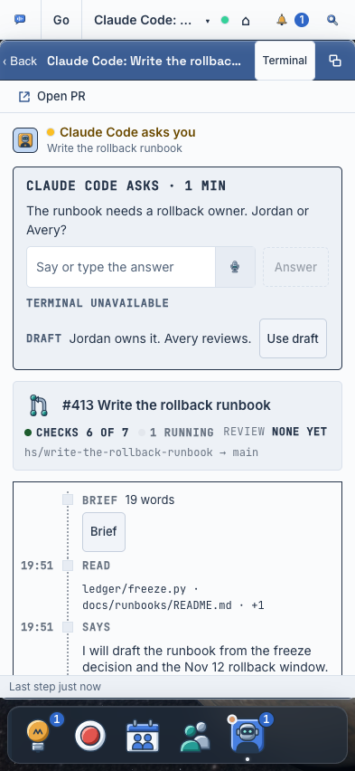

The agent's window
What the window of one running agent shows while it works, when it waits for you, and when it is done; and where its terminal lives. The first user hands work to Claude Code and Codex and checks the follow-through (J4). He opens this window to answer three questions: what is it doing now, does it need me, and what did it make.
Two directions at real size, 760 × 560 over the real desk, and the recommended one at 393. The data in every frame is the lane rig's seed (tests/e2e/agents_lane_rig.py), the same hook events, commit and PR the hub reports.


What the hub knows about a running agent
Read from GET /api/agent/launches/{id}/lane (holdspeak/services/launch_lane.py:478-553) and the flights read. Honest: blue is real today, ember is not.
Real, from the launch
- The agent, the brief text, the branch, the worktree path, when it was launched, the control mode (
launch_lane.py:478-509). - A stop by you, queued instructions, every instruction sent, with receipts.
- The PR from the follow-through: number, URL, state, checks, review (
:515-527). - The worktree from git: commits (sha, subject, time) and changed files (
worktree_facts,:148).
Real only when the agent's hooks report
- The events (
:530): each tool call with its tool and a head: the file path for Read, Edit, Write; the first 120 characters of a Bash command; for Codex the files of anapply_patch(holdspeak/agent_context/event_log.py:19-31). - What it says at the end of a turn (Stop's message), each prompt it got, a Notification's message.
- The wait: the question, its kind (answer, approve, HoldSpeak decides), when it began, HoldSpeak's draft (
_wait,:241-299). - A held call: the command, why it waits (
gated). - What it read, wrote and prepared on the desk with its launch key (
used,:546), its last words (:548).
Not known (do not draw it)
- The result of a tool run: the hook keeps no output, so “6 passed” is not there (
web/src/desk/lane/laneWire.ts:299-305). - The current step as a fact: the hub reports past events only. The window lights the newest event while the agent works, and says so in the time column (“now” is not drawn without a fresh event).
- When the PR opened (the hub keeps no PR time): the PR row has no time mark.
- A diff per file; durations; cost per step.
- A “this work is done” fact on the launch: no route closes a launch (
/api/agent/launches/{id}/…has answer, deliver, explain, rebrief, resume, seen). A Done verb needs a hub slice. - An agent with no hooks: no events at all; the hub reads its screen instead (
agentFlights.ts:135-150), so the window says “No steps reported yet” and its last words from the screen. - In the rig: no live terminal pane (the pane read says it is not there).
Recommendation: A, the step log recommended
A makes the body a dense list of steps with time marks (30 px rows, a coloured glyph per kind, the path or the command in mono, the agent's words in quotes), the newest step lit while it works. The objects it made (the PR, the branch, the changed files) are object rows beside the steps at 1440 and above them at 393. When it asks, the question is a soft card at the top with Answer as the window's one primary. When it is done, the result card leads: its last words and what it made, with Open PR as the primary. The terminal is a wing in the title bar (Steps · Terminal), the same segment Speak and the Room wear; the white tab goes.
B, the conversation, draws the work as a chat: the agent's words as bubbles, the tool calls folded into chips, the answer field docked at the bottom. It reads friendly, but it hides the work he comes to inspect behind folds, and a chat says “talk to it” when the job is “check it”. Keep B's one good idea: the agent's words read as words, not as a log line.
Build order
- Slice 1 (this lane): the step list as the body, from real events (
eventEntries), with No steps reported yet when there are none; the three toolbars (working: Tell it · Open PR · Stop; waiting: the same, the card's Answer primary; done: Open PR primary · Tell it); the Terminal as a wing (Steps · Terminal), the title-bar tab gone; the waiting card first; the objects (PR, branch, files) as object rows. - Slice 2: the ask card on the kit's soft plate for every kind (answer, approve a held call, HoldSpeak decides); the held call's command whole in the card.
- Slice 3 (hub): a launch-close fact (Done: the work is checked, the row leaves Agents), and the tool run's result in the event detail (so a test run says “6 passed”).
- Later: Open in Processes from the Terminal wing, for a terminal beside the steps.
One truth for the agent's state (atlas pass 2)
Found
- The agent's window said “Claude Code is working” while the Agents list said “Session gone” for the same launch: the window guessed “working” when it had no live flight; the list read the hub's launch history.
- Agents mixes runs and installed tools in one list (a version number in the What column), and its status bar says “1 working” while no row says Working.
Slice 1 ships
- The window reads its state from the same source as the Agents list: the live flight, else the launch in the hub's history (
useConductor.history,members.ts closeReceipt). - A gone session reads Session gone (or Stopped by restart, Could not resume, Ended) in the status bar; nothing is lit; Tell it and Stop leave; the one verb is Start again (a new agent on the same item, Hand again), with Open PR beside it.
Next (the Agents lane)
- Runs and installed tools apart: the runs list, and the tools as a quiet footer or the Settings ▸ Agents pane.
- The status bar's count from the rows it lists (no “1 working” with no Working row).
- Remove a gone launch: the hub has no route for it (with Done, slice 3).
A · the step log recommended
ledger/freeze.py, docs/runbooks/README.md and 1 moreI will draft the runbook from the freeze decision and the Nov 12 rollback window.
docs/ledger-rollback.mdpytest tests/runbooks -q5b7c64e Draft the ledger rollback runbookdocs/ledger-rollback.md #413 Write the rollback runbookChecks 6 of 7
#413 Write the rollback runbookChecks 6 of 7hs/write-the-rollback-runbookdocs/ledger-rollback.mdfreeze.pydocs/ledger-rollback.mdpytest tests/runbooks -q5b7c64e Draft the ledger rollback runbook#413 Write the rollback runbookChecks 6 of 7hs/write-the-rollback-runbookdocs/ledger-rollback.md. Jordan owns the rollback; Avery reviews. Tests pass. PR #413 is open.pytest tests/runbooks -q5b7c64e Draft the ledger rollback runbook#413 Write the rollback runbookChecks 7 of 7hs/write-the-rollback-runbookdocs/ledger-rollback.mdfreeze.pyNot chosen: the Processes window as the terminal's only place. It is right for a terminal beside the steps (Open in Processes, later), wrong as the one door: two windows for one agent.
A at 393 (the phone)
#413 Write the rollback runbook6 of 7hs/write-the-rollback-runbookledger/freeze.py and 2 moreI will draft the runbook from the freeze decision and the Nov 12 rollback window.
docs/ledger-rollback.mdpytest tests/runbooks -q5b7c64eAt 393 the wing strip folds to one menu (Steps ▾, the strip menu every wing uses). One column: the ask, the objects, then the steps. The answer row wraps: Use draft left, Answer right.